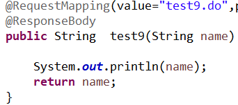
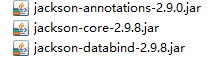
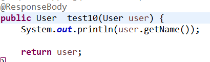
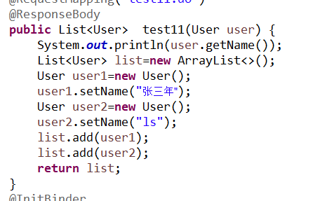
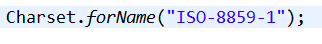
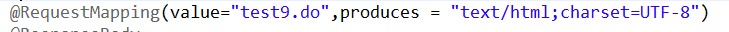
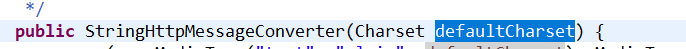
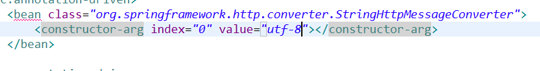

Ajax在请求controller时会赋值的类型不变，但是返回值，因为会走视图解析器，所以会以地址的形式进行解析，而不会返回数据，需要在方法上加上注解，将返回类型解析成json类型
一、返回基本类型

@ResponseBody 将返回类型进行解析成json形式
二、返回对象
需要导入jar包

在需要返回对象的方法上加上注解 @ResponseBody

三、返回list类型与对象一致

注意：ajax乱码
原因在与解析String时，默认使用的是ISO-8859-1

两种解决方式
一、注解
在@RequestMapping的注解中加入属性produces = "text/html;charset=UTF-8"

二、进行springmvc配置

因为是构造函数的赋值，所以要进行配置文件

index是构造函数的下标，从0开始。